Her kare, dondurulmuş bir hikaye ve ışığın dansıdır.
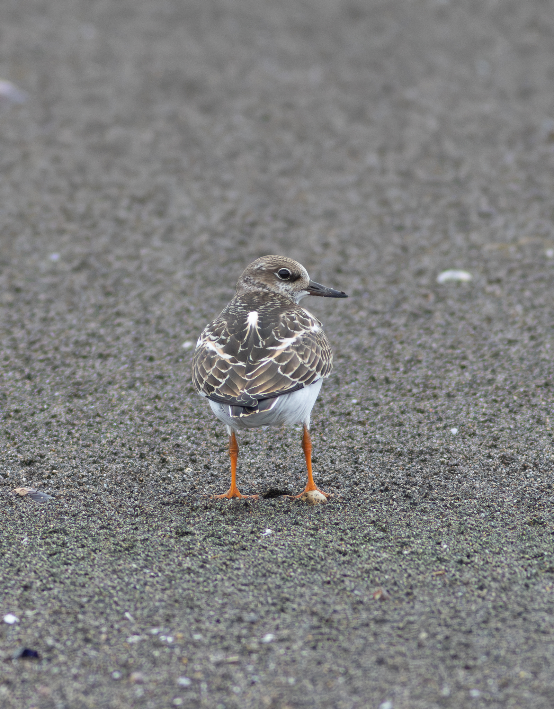
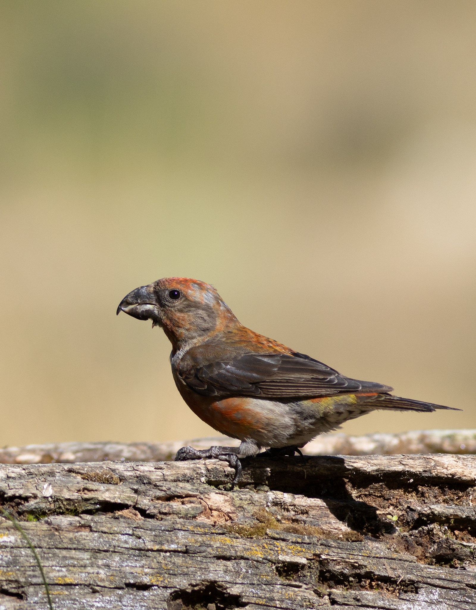
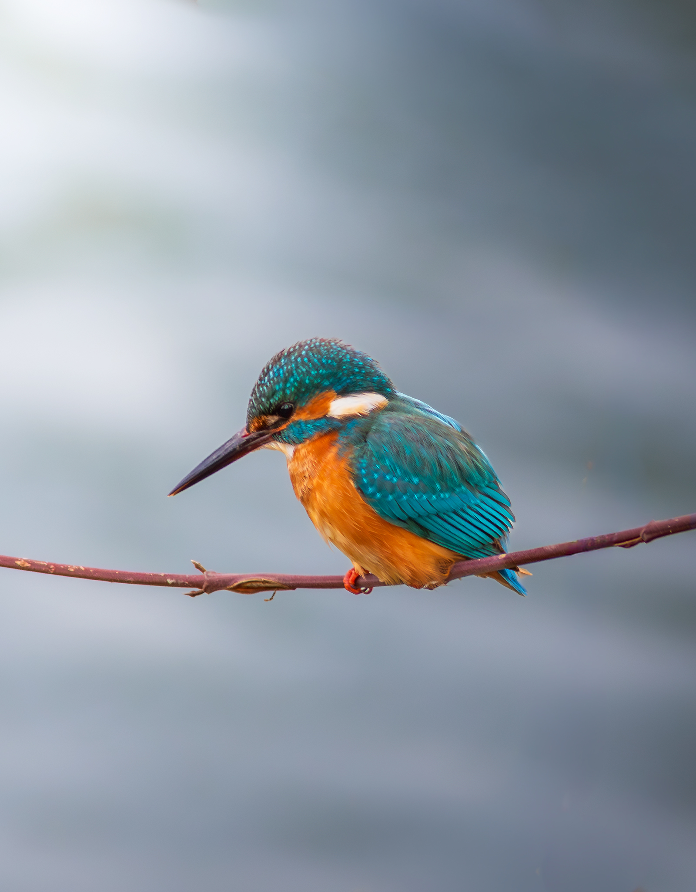
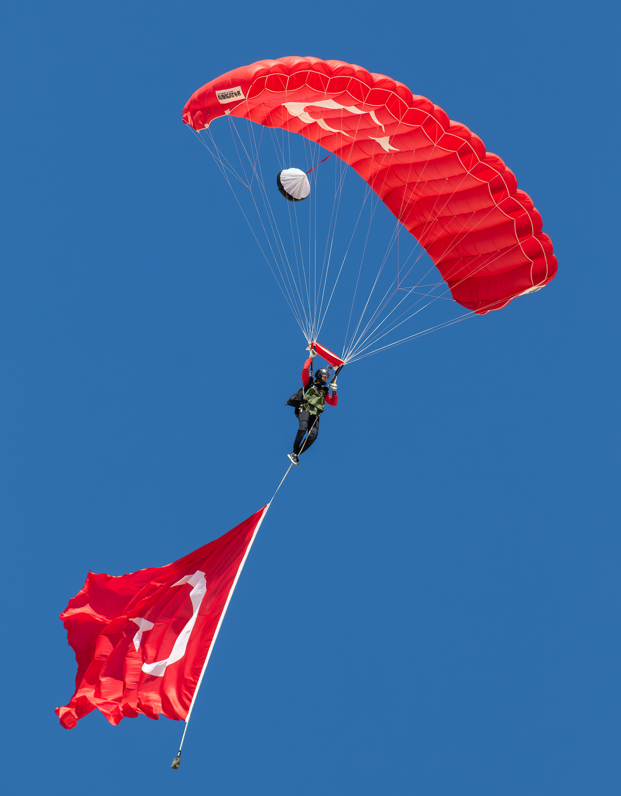
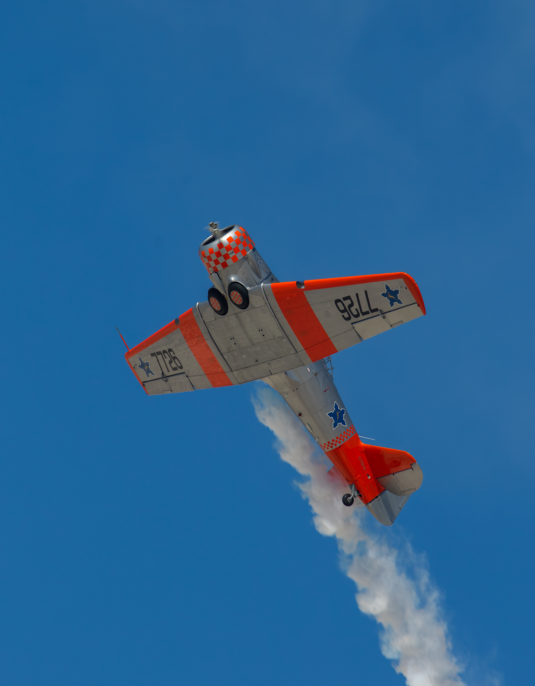
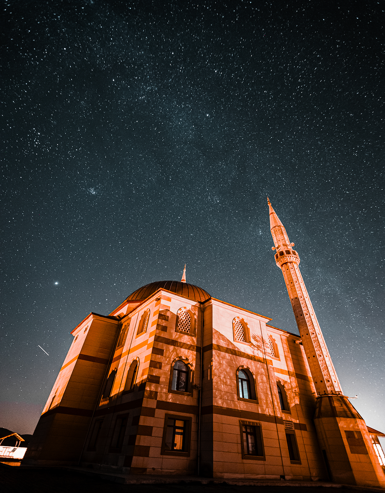
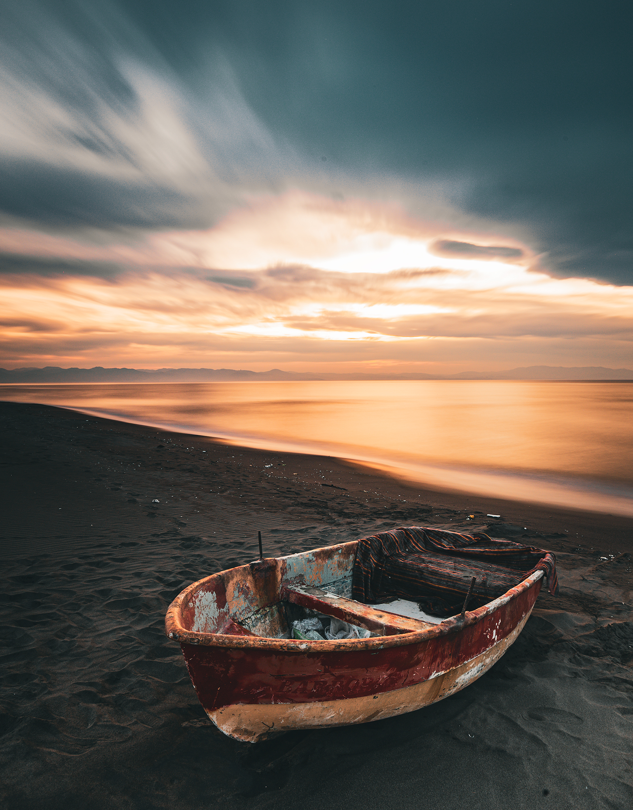
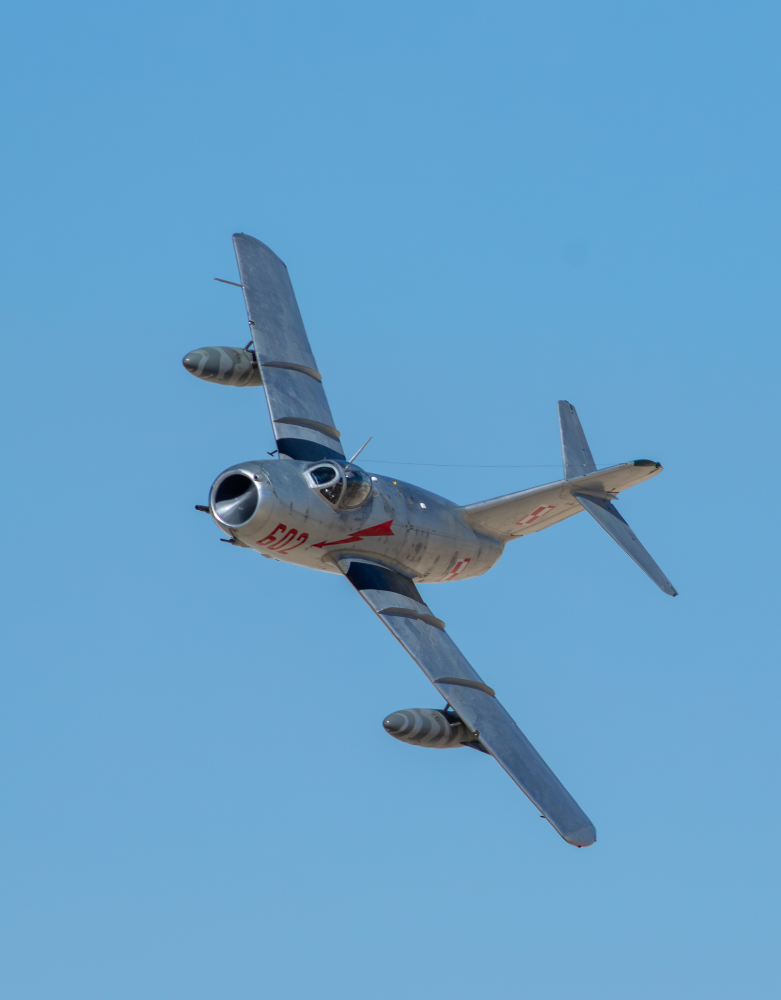
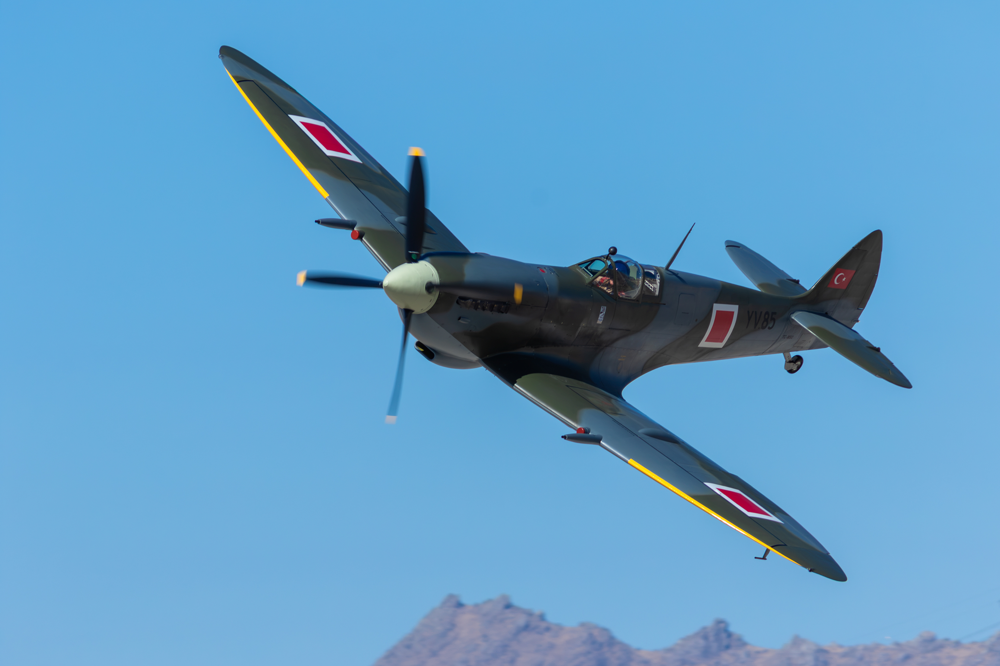
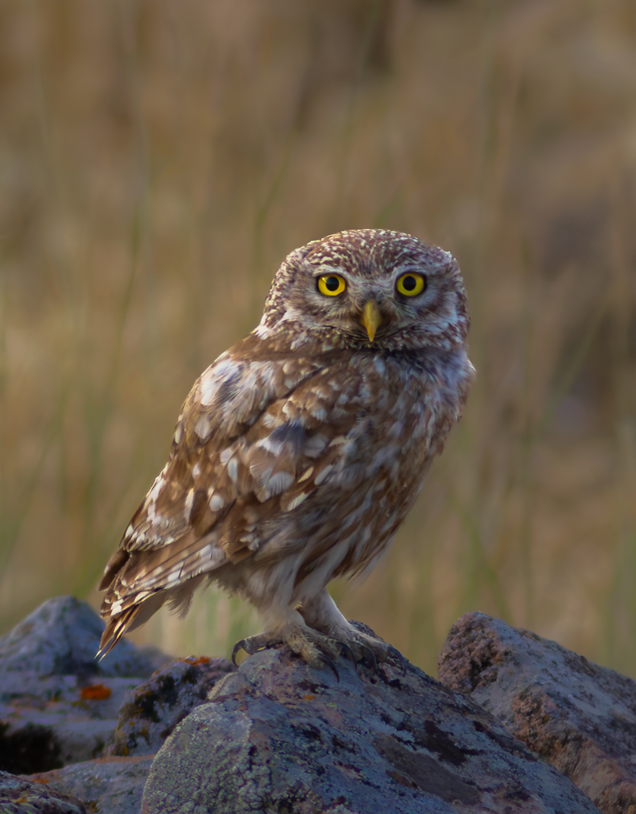
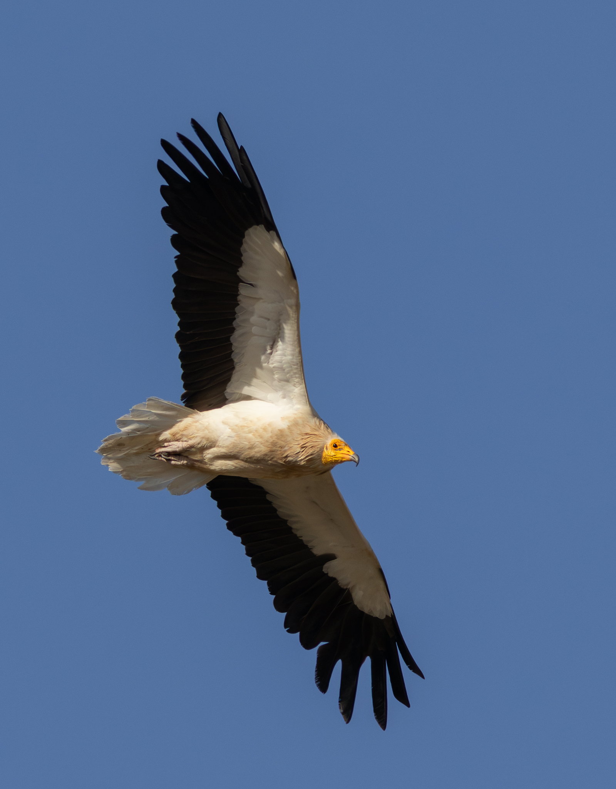
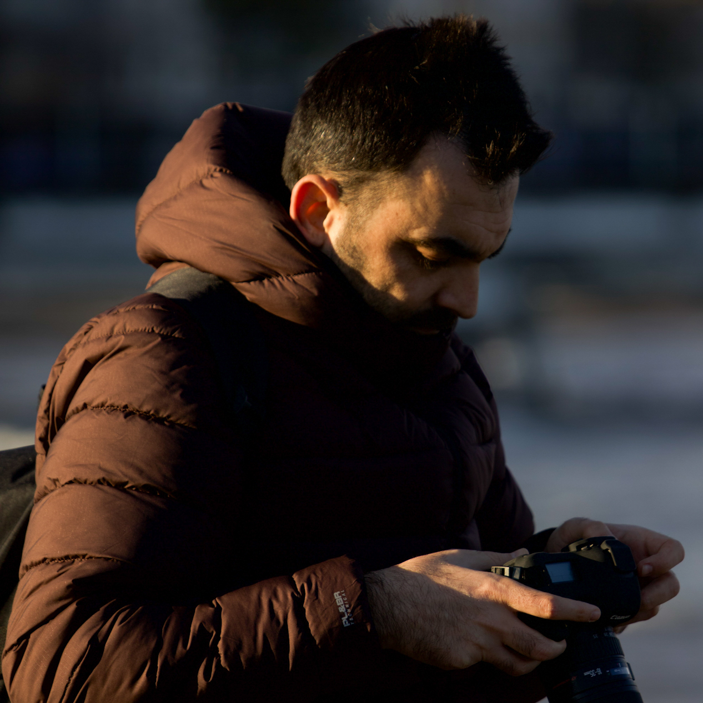
Kelimelerle kurduğum bağı vizörün ardındaki ışıkla birleştiren bir Türkçe öğretmeniyim. Samsun’un verimli coğrafyasında; Kızılırmak ve Yeşilırmak deltalarının sunduğu eşsiz yaban hayatı ve sulak alan ekosistemini sabırla kaydetmek fotoğrafa bakışımın merkezinde yer alıyor. Benim için fotoğraf, yalnızca bir anı dondurmak değil; doğanın kendi ritmini, bir kanat çırpışını, gökyüzündeki Samanyolu kuşağını ya da ayın döngülerini sessizce dinleme çabasıdır. Havacılık fotoğrafçılığının getirdiği yüksek hız ve kesinlik ile doğadaki uzun bekleyişlerin gerektirdiği sabır, vizörümün iki zıt ama birbirini tamamlayan dengesini oluşturuyor.
Akademik olarak fotoğrafçılık ve kameramanlık eğitimiyle teorik altyapımı güçlendirirken; karada, deltada ve gökyüzünün altında ışığı kovalamaya devam ediyorum. Görsel hikâyelerimi edebiyatın derinliğiyle buluşturmayı, gördüğüm dünyanın saklı detaylarını en yalın ve sahici hâliyle paylaşmayı amaçlıyorum.
Baskı talepleri, projeler veya sadece merhaba demek için yazın.